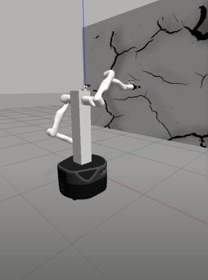
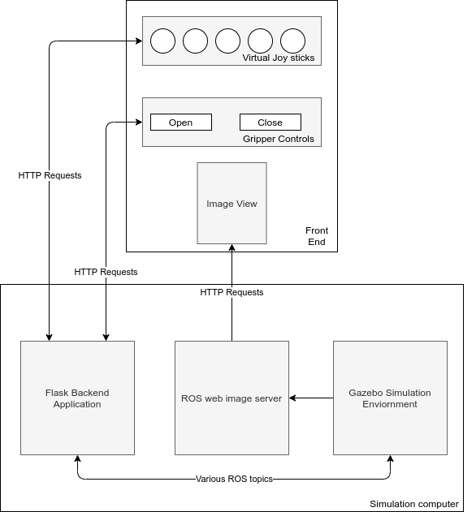
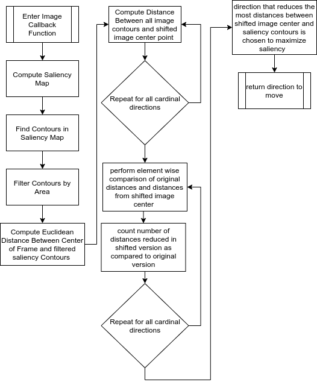

Autonomous Camera Assistance for Dexterous Telemanipulation
This page outlines initial research work that I performed at Worchester Polytechnic Institute on the subject of autonomous camera assistance for dexterous telemanipulation task completion. The goal of this work was to design a viewpoint selection algorithm that would maximize image saliency in the frames shown to the teleoperator. This algorithm was implemented on the Trina2 system developed in the human inspired robotics laboratory at WPI. This robot feature two 7-DOF arms on a mobile robot base. These arms each have a gripper and eye-in-hand camera. The right arm was used as the autonomous camera arm, and would seak out viewpoint that maximized image saliency for the teleoperator. While the right arm was used as the manually controlled arm for completeing the given telemanipulation task. The task designed to demonstrate the effectiveness of saliency maximization was a wall crack repair/inspection. In this task, the user would manually guide the manipulator arm over the cracks within the wall to "repair them", while the autonomous camera arm would seek to maximize saliency within images selected. The cracks are highly salient as compared to the rest of the wall, so choosing viewpoints that maximize the saliency in a given image should also maximize the cracks seen within a given image. The robot positioned within the tasking environment in the Gazebo simulation enviornment can be seen in the figure below.
Flask Web-Based Graphical User Interface
Once the robot was found to be setup correctly within the Gazebo environement, a custom GUI was implemented to allow for direct control of the end-effector's degrees of feedom. This GUI used a web front-end/back-end software architecture. In this way, the front end could be easily modified to run on a tablet, mobile phone or a standard computer, and the backend would work with the frontend in each of these cases. The frontend was designed using html/CSS and javascript. The backend was implemented using the Flask microservice framework, and standard ROS packages and python bindings. The backend outputs the current state of the frontend by publishing standard sensor_msgs/Joy messages over the /virtualJoystick topic. This allows the GUI to be easily extended into other works and applications. The software architecture diagram of the web-GUI along with a demonstration video of user input actuating the robot's end-effector Pose can be seen below.
The developed software used to run the frontend and backend components of the webGUI can be found in the ROS package here
Saliency Maximization Algorithm
The saliency maximization viewpoint selection algorithm was designed as a visual servoing algorithm of sorts. This means that the maximum (or local maximums) of image saliency within the enviornment were found by incrementally movimg in the direction of saliency maximization. If no direction would further maximize the saliency in the selected viewpoint, then saliency was said to be maximized. The developed saliency maximization algortihm can be seen in a flowchart form in the image below.
It can be seen that the algorithm can be split into two components, the saliency countour detection portion and distance minimization portion. The saliency coutour detection portion constructs a saliency map of the given frame, and finds highly salient regions that fit a set of filtering criteria. From here, the distance between detected contour center of mass and the center of the image is computed. This process is then repeated with image centers shifted in the four cardinal directions. The original computed distances are then compared to the shifted distances to see what proposed movement would best reduce the overall distance of saliency conours to the center of the image. The direction with the most distances reduced by a given threshold is chosen as the direction to move. The direction to move is used to generate a pose offset in the given direction to the autonomous camera arm's current pose. A demonstration of the saliency maximization algorithm running on a webcam using manual movements from the user in the direction suggested by the algorithm can be seen in the video below. Note that the green blobs are filterd saliency contours, the black lines represent the distance between the contours COM and the red arrow is the suggested direction to move.
This same algorithm was run using images taken from the autonomous camera arm of the Trina2 robot arm. Unfortunatley, the time required to generate and execute trajectories by the MoveIt! motion planners resulted in the image topics needing to be throttled down to sub-hertz frequencies. Due to this system limition, the responsiveness of the robot to saliency information is jerky and infrequent. This algorithm can be seen running on the Trina2 system in the video below.
The generated saliency maximization algorithm can be found in the ROS package here